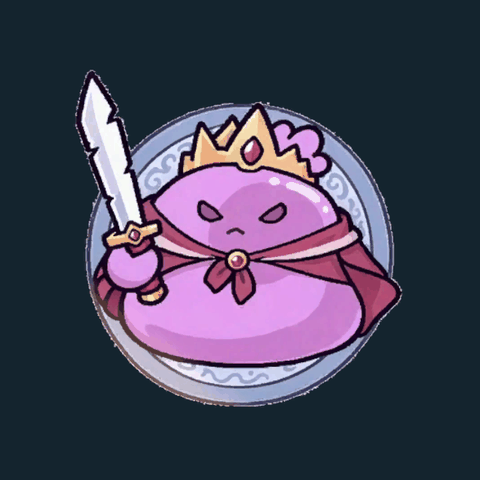
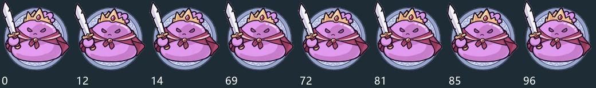
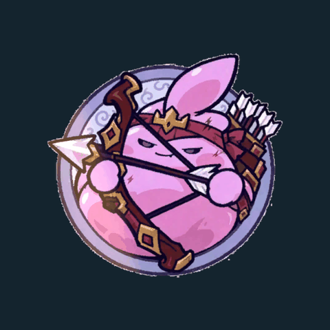
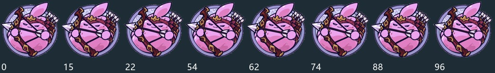
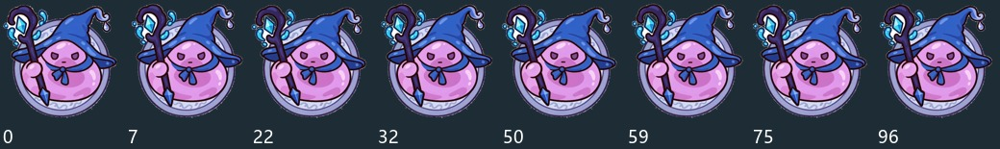
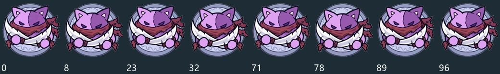
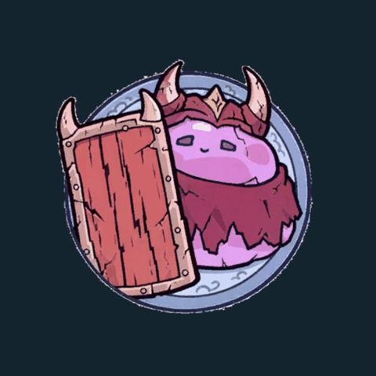
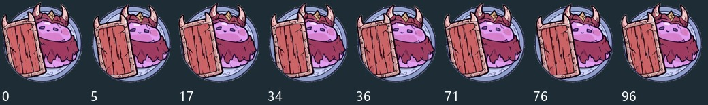
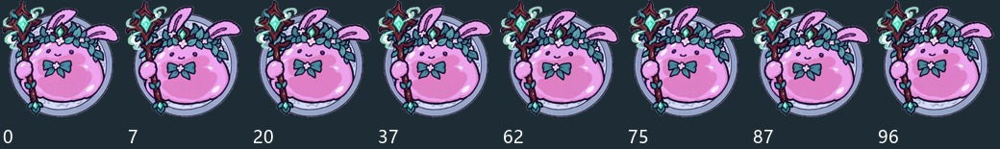

每个角色97 → 8 帧六章共48张
Android新增资源2.68 MiB六章BOSS包合计
Android全部AB26.80 MiB不等于APK体积
章节对应关系
| 章节 | 美术角色 | 选帧 | 实际Android包 |
|---|
| 第1章 | 剑士 | 97 → 8 | 0.432 MiB |
| 第2章 | 弓手 | 97 → 8 | 0.466 MiB |
| 第3章 | 水系法师 | 97 → 8 | 0.454 MiB |
| 第4章 | 刺客 | 97 → 8 | 0.435 MiB |
| 第5章 | 盾卫 | 97 → 8 | 0.433 MiB |
| 第6章 | 牧师 | 97 → 8 | 0.464 MiB |
原97帧640px透明素材不动，制作48张384px运行时副本。根据姿态变化选关键节点，再检查预览；保持原画幅与中心，不逐帧裁切。每帧默认0.18秒，往返播放减轻首尾姿态不一致的跳变。
真实AB动画预览
以下GIF来自真实PC AB的PieceView固定输入绘制。正文逐帧和往返端点、重复刷新、回池再复用检查通过。
第1章 · 剑士


原帧索引：0, 12, 14, 69, 72, 81, 85, 96第2章 · 弓手


原帧索引：0, 15, 22, 54, 62, 74, 88, 96第3章 · 水系法师

原帧索引：0, 7, 22, 32, 50, 59, 75, 96第4章 · 刺客

原帧索引：0, 8, 23, 32, 71, 78, 89, 96第5章 · 盾卫


原帧索引：0, 5, 17, 34, 36, 71, 76, 96第6章 · 牧师

原帧索引：0, 7, 20, 37, 62, 75, 87, 96配置和加载
BossChapter01～06资产保存章节、8帧、帧间隔、往返、身体缩放和自带饰件。六张SpriteAtlas V2与各章配置/帧同包，普通棋子不硬引用它们。Boss回合只租当前章；换章与退出成对归还，死亡消融先完成再释放旧帧。
保留原Boss占格、血条、技能和数值，仅替换外观。普通棋子动画仍使用原配置，回池后不会留Boss帧或缩放。
验证与边界
编译无错误，PC/Android各46业务包构建成功。最后Console检查有7条第三方Unity MCP WebSocket连接失败日志，RevMCP仍可用；没有清空错误记录，也未出现本次Boss代码/资源错误。解析包中每章8个Sprite和一张压缩透明图集页；实际PieceView换帧有GPU像素变化，重复刷新不归零，回池/普通棋子复用通过。
未启动Play或切换用户场景；完整Boss出生/死亡/跨章/取消、正式图集首次自动绑定和Android真机未端到端验收。离屏验证不替代这些。全部AB体积也不代表APK达标。
game.boss-keyframes.check
game.boss-keyframes.preview
python tools/boss-keyframes.py --check
完整说明与选帧清单